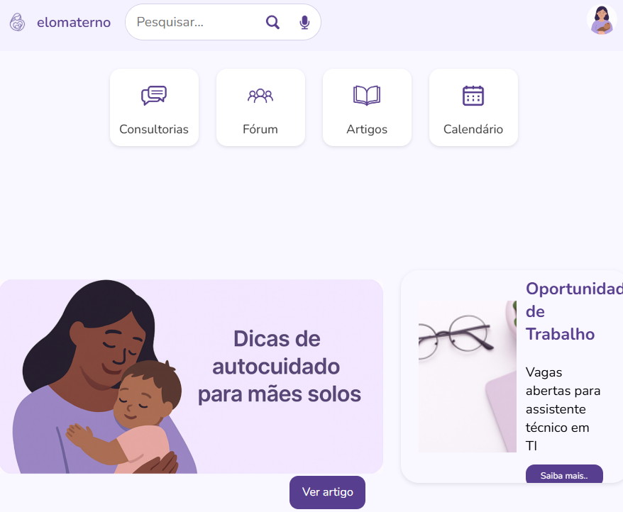

Português
Português English
English Español
EspañolNossos Projetos
Veja nosso principal projeto, que estamos trabalhando no TCC!

Elo Materno
Em andamentoO projeto consiste em um hub digital voltado para mães solo e pais em situação de vulnerabilidade, com o objetivo de oferecer suporte, visibilidade e conexão com recursos que possam facilitar sua vida cotidiana. A plataforma busca ser um espaço seguro, acessível e prático, permitindo que os usuários publiquem necessidades, compartilhem experiências, encontrem oportunidades de apoio (como doações, serviços comunitários, cursos ou até empregos) e construam uma rede de solidariedade.
Saiba MaisTem um projeto em mente?
Vamos transformar sua ideia em realidade digital. Entre em contato conosco para uma consulta gratuita.
Fale Conosco